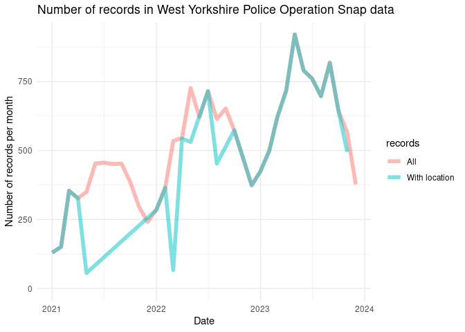

Opsnap data
The opsnap package provides a function to download and read in data from the West Yorkshire Police Operation Snap database. The data is available at the following URL: https://www.westyorkshire.police.uk/SaferRoadsSubmissions
Data for the following years are provided:
| file_names |
|---|
| operation_snap_oct-dec_2023_0.xlsx |
| operation_snap_july-sept_2023.xlsx |
| operation_snap_apr-jun_2023_data.xlsx |
| operation_snap_jan-mar_2023_data.xlsx |
| operation_snap_oct-dec_2022_data.xlsx |
| operation_snap_jul-sept_2022_data.xlsx |
| operation_snap_apr-jun_2022_data.xlsx |
| operation_snap_jan-mar_2022_data.xlsx |
| operation_snap_2021_data.xlsx |
The data is open acess and looks like this, with names cleaned up by the package:
u = "https://www.westyorkshire.police.uk/sites/default/files/2024-01/operation_snap_oct-dec_2023_0.xlsx"
d = opsnap:::download_and_read(u)
names(d)
# Old names:
# [1] "REPORTER TRANSPORT MODE" "OFFENDER VEHICLE MAKE"
# [3] "OFFENDER VEHICLE MODEL" "OFFENDER VEHICLE COLOUR"
# [5] "OFFENCE" "DISTRICT"
# [7] "DISPOSAL" "DATE OF SUBMISSION"
# [9] "...9" "OFF LOCATION"
# New names:
# [1] "mode" "make" "model" "colour" "offence" "district" "disposal"
# [8] "date" "location"| mode | make | model | colour | offence | district | disposal | date | location |
|---|---|---|---|---|---|---|---|---|
| Cyclist | Honda | JAZZ | BLUE | RT88576 Drive without reasonable consideration to others | BD | Educational Course | 2023-10-01 | A650 SIR FRED HOYLE WAY, BINGLEY |
| Cyclist | Citroen | DS3 | WHITE | RT88576 Drive without reasonable consideration to others | BD | Educational Course | 2023-10-01 | DALTON BANK ROAD, HUDDERSFIELD |
| Vehicle driver | Audi | S3 | BLACK | RT88760 Fail to comply with solid white lines | LD | Educational Course | 2023-10-01 | A1 North Wetherby, Leeds |
There are 18363 records in the data, with increasing numbers of records over time (average n. records per month shown below):

As shown in the graph above, some records (68.9%) have missing values for the ‘offence’ column (these records did not classify as an offence). Many records lack either an offence or a location (48.1%). Filtering these out leaves 8832 complete records.
There are 6478 unique locations in the data, with the most common locations shown below:
| location | n | percent_records |
|---|---|---|
| Meanwood Road, Leeds | 34 | 0.385% |
| Westgate J/W Park Square West, Leeds | 31 | 0.351% |
| Dewsbury Road, Ossett | 29 | 0.328% |
| Chapeltown Road, Leeds | 24 | 0.272% |
| Highgate Road, Bradford | 22 | 0.249% |
| M62 EASTBOUND, BRIGHOUSE | 19 | 0.215% |
| Clayton Road, Bradford | 18 | 0.204% |
| Tongue Lane, Leeds | 18 | 0.204% |
| WESTGATE junction with PARK SQUARE WEST, LEEDS | 18 | 0.204% |
| Manchester Road, Bradford | 17 | 0.192% |
Geocoding
We provide a function to geocode the records:
d_sample = d[1:5, ]
d_sf = opsnap:::op_geocode(d_sample)
mapview::mapview(d_sf)Analysis
Due to inaccuracy in the geocoding, we only know the locations of the records to within around 500m of each crash (although we can link to specific roads). We’ll present the geographic distribution of crashes using a 500m grid:

The results show there is one outlier with a very high number of crashes. We can remove this and plot the data again: